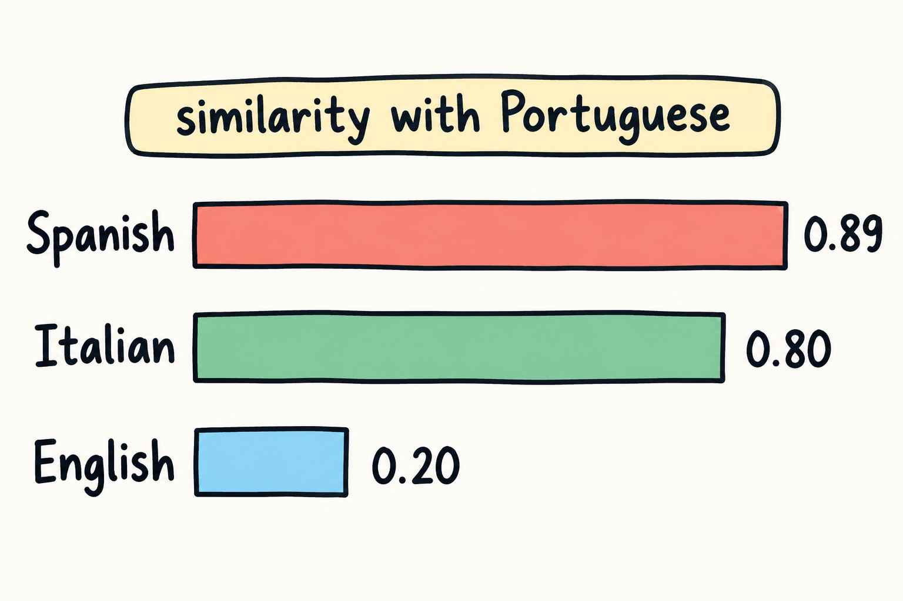

If you are reading this, you have already touched Portuguese: an app streak, a class, a few phrases before a trip. That is the right starting point, and it is enough to use this book. It also means you already carry a mental map of the language, and parts of that map are wrong. Some things in Brazilian Portuguese will feel strangely close. Other things, which look easy on the page, will fight you for months. This chapter redraws the map so you spend your time where it pays.
Here is the short version. Portuguese is close to English in the learned words you read, and far from English in the everyday words you speak and in the sounds you hear. English speakers usually invert that picture. They brace for grammar to be the mountain and treat pronunciation as a hill, then wonder why conversation keeps stalling on sounds while the grammar rules land quickly. Setting that straight is the whole point of this chapter.
There is a standard measure of how much of two languages' vocabulary looks alike: lexical similarity. The lexical similarity between Portuguese and English is about 0.20 [F9]. Between Portuguese and Spanish it is about 0.89 [F9]. Between Portuguese and Italian it is about 0.80 [F9].
Pause on those numbers and feel what they say. Portuguese sits in the same neighbourhood as Spanish and Italian. English sits across the street. So the sentence "Portuguese must be easy because it is like Spanish" is true for a Spanish speaker and misleading for you. The word forms you share with Portuguese are few. The word forms Portuguese shares with Spanish are many.
That is the "far" half of this chapter's title, and it is the honest half. Do not read it as bad news. Read it as a budget decision: you cannot rely on look-alikes the way a Spanish speaker can, so the words you need most have to be learned on purpose. Now for the "close" half, which is just as real.

About 28.30% of English vocabulary comes from French [F10], and about 28.24% comes from Latin [F10]. Portuguese grew out of Latin, so the learned layers of the two languages meet and overlap. Open a formal Portuguese text, an opinion piece, a work email, a museum label, and you will recognize far more words than the similarity figure led you to expect. That is the engine behind most of the cognates you will exploit in Chapter 2.
Then comes the second figure, and it is the one that explains why speaking feels harder than reading. About 83% of the most frequent English words are native [F10]. The English words you use without thinking are the old, everyday core of the language, and that core is precisely the part with no twin waiting for you in Portuguese. The shared material lives in the learned layer, and the learned layer shows up more in writing than in chat at a bus stop. (The link between those figures and your experience of speaking is this book's practical reading of them, not a claim of the source.)
So the same reader has two different experiences, and you should plan for both:
This is also where the first strategy pillar of the book appears, and in this chapter it is motivation only: treat your English as a cognate engine with a false-friend brake. Many English words convert into Portuguese through regular patterns of spelling and suffixes, and sometimes the pattern lies to you and the look-alike means something else. Chapter 2 turns that idea into a daily routine. The promise here is modest and true: your vocabulary is worth more on paper than in your mouth at the beginning, and you can convert that paper advantage into spoken advantage with deliberate work.
Brazilian Portuguese: the variant certified by Celpe-Bras [F7]. The exam is mentioned here for exactly one reason, which is to name the variant this book teaches. To be explicit about what that does not mean: this book makes no promise about any exam. It does not prepare you for Celpe-Bras or for any other test, and passing an exam is not one of its goals. If you are studying for a specific exam, use the materials built for that exam and treat this book as a strategy guide on the side.
The pronunciation reference of the book is broad Brazilian pronunciation. Where a regional difference changes what you actually hear, the book says so and marks it as regional. Otherwise one shared reference is enough for a false beginner who needs priorities more than maps of every city.
The book is organised around decisions, not around completeness. It gives you:
Three promises matter as much as the contents.
First, there are no audio files and no QR codes in this book. What the book offers is transcription only: Portuguese written down, plus a respelling so you can approximate it. You will still need real Brazilian speech from somewhere else, and the appendix points to free open materials for exactly that.
Second, there is no exam promise. Nothing in these pages is a guarantee about Celpe-Bras or any other certificate. The exam is cited only as the reference for the Brazilian variant [F7].
Third, there are no numeric vocabulary targets. You will not be told to memorize a fixed number of words by a fixed date. This book treats vocabulary as a continuous gain: every useful word you add makes more Portuguese comprehensible, and the practical rule is to learn the frequent words you actually need before the exotic ones. Counting words is a poor substitute for using them.
This book never asks you to learn a phonetic alphabet in the main text. Instead, Portuguese words are followed by a simple respelling in English letters. The stressed syllable is written in CAPITALS, because stress is the thing that most often gives away a foreign accent and the thing you can copy immediately.
obrigado = oh-bree-GAH-doo
Read that as: stress on the third syllable, and every vowel said clean and short. Here is the key, with the author's illustrations, not sourced pronunciations.
| Written form | Sounds roughly like | Illustration |
|---|---|---|
| a | "ah" in father | casa = KAH-zah |
| e | "eh" in bet | mesa = MEH-zah |
| i | "ee" in see | aqui = ah-KEE |
| o | "oh" in note, but pure, with no glide | como = KOH-moo |
| u | "oo" in food | tudo = TOO-doo |
| final -o | "oo" | obrigado = oh-bree-GAH-doo |
| final -e | "ee" in most of Brazil | importante = eem-pohr-TAHN-chee |
| ch | "sh" in shop | chá = shah |
| ç, and c before e or i | "s" in sun | você = voh-SEH |
| j, and g before e or i | the middle sound of "measure", written zh | já = zhah |
| lh | close to the "ly" in million | filho = FEE-lyoo |
| nh | close to the "ny" in canyon | ninho = NEE-nyoo |
| r at the start of a word, and rr | close to a strong English "h" | rua = HOO-ah |
| ã, õ, and m or n after a vowel | the vowel said through the nose | mão = mowng, roughly |
Two habits make the key work for you. Read the respelling out loud every time you meet a new word, and say the vowels clean: Portuguese vowels do not glide the way English ones do, so "oh" is not the "oh" of "go". And treat the respelling as an approximation you will refine by ear, not as a destination.
From Chapter 3 onward, every sound this book trains carries one of two labels.
"Changes meaning" marks a contrast where getting it wrong can turn one word into another. If a sound difference can swap one word for another in the ears of your listener, that contrast belongs at the top of your list, because a mistake there costs meaning, not just style.
"Accent only" marks a feature that makes you sound foreign but does not create another word. Those features are worth fixing eventually, and they come after the meaning contrasts in the order of work.
The ranking matters because of the goal this book declares for pronunciation: to be understood without effort. That is a different goal from sounding native, and it is the honest one for an adult learner with limited study time. Chapter 4 shows how the two columns are built and how to train each one. For now, keep the labels in mind: whenever you read a sound description later, you will know whether it is a meaning problem or a style problem, and you will know which one to fix first. This is the preview of the intelligibility hierarchy, one of the pillars of the book's strategy.
Your Spanish is a real asset and a real risk at the same time. In this overview chapter, three traps are worth naming up front.
Also worth knowing as a plan: English-Spanish bilinguals depend on Spanish when learning Portuguese, whatever the order in which they acquired their languages [F62]. That dependence is not a defect to be ashamed of. It is simply the material you have to manage, and Chapter 8 is built for it.
A practice suggestion for this chapter: the full-stop drill. In Portuguese, produce b, d and g as real stops, with a complete closure, especially between vowels. Say these author's illustrations slowly and deliberately, and make the consonant hard rather than soft:
Say each word, then put it in a short phrase of your own, then say it again at conversational speed without letting the consonant soften. The drill is a suggestion, not a test, and it is worth repeating whenever you warm up.
If you only keep one map from this chapter, keep this one. Spend early time on the everyday words and phrases that conversation runs on, and on the sound contrasts that change meaning. Spend later time on the accent-only details. Use your English for reading and for the learned vocabulary, and stop trusting it blindly where words look similar. Grammar needs work, but it is not the mountain you were bracing for; the traps are specific, they are named in Chapter 5, and they are fixable.
This section exists because retrieving what you just read is what makes it stick: a meta-analysis of the testing effect compares testing with restudy [F94]. Answer from memory first, then check.
As the author's suggestion, here is a simple calendar for this chapter. Read it once today, then come back to it on the following days:
On each return, do not reread the whole chapter first. Run the self-test from memory, then reread only the parts you missed. These four review points are the author's adaptation of the interval idea in a spacing study [F90], which measured a single gap between two study sessions. That source did not test this calendar, and the four points are a suggestion, not a result reported by that study. Adjust the timing to your own week if you need to; the habit of returning and retrieving matters more than the exact day.